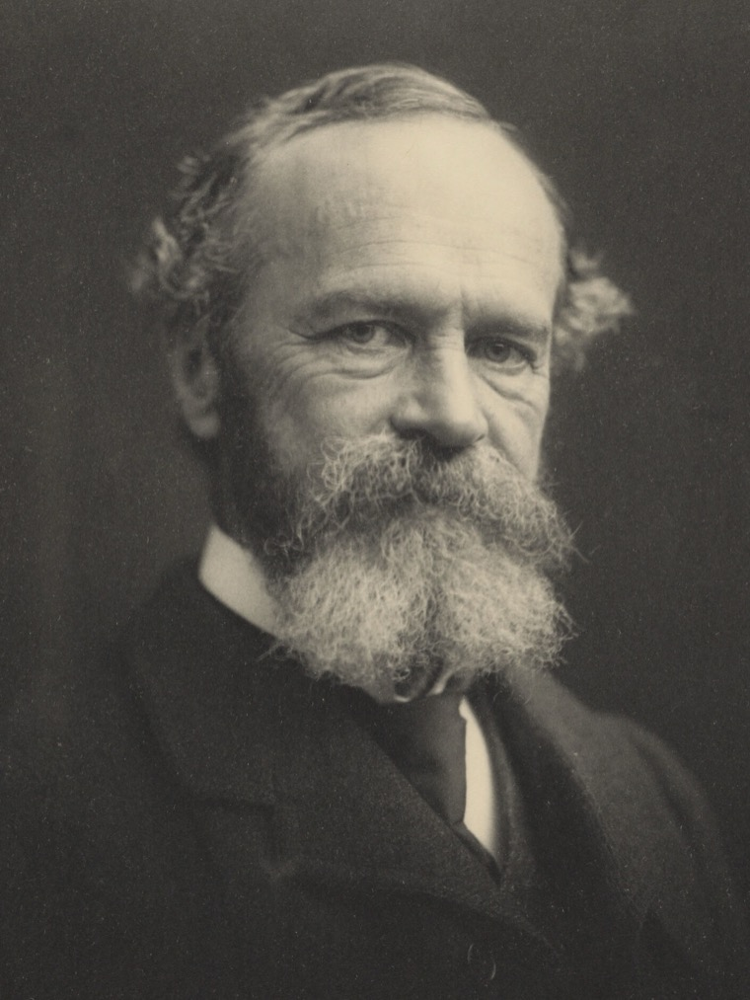

A psychologist reads saints, converts and people in despair, then asks how much their experiences can tell us about God.
A reading of The Varieties of Religious Experience/ 1902 / 11 min read
scroll
William James took nitrous oxide and felt the contradictions of the world dissolve into unity. Afterward he still thought the experience mattered, although he struggled to explain it. He also argued that a mystic's certainty gives the rest of us no obligation to believe.
In The Varieties of Religious Experience, James, a Harvard psychologist and philosopher with a medical degree, asks what encounters with the divine feel like, how they change people, and how far they justify belief. The book appeared in 1902, after his Gifford lectures in Edinburgh in 1901 and 1902.
He draws largely on autobiographies, letters and accounts collected by other researchers. His cases include Tolstoy's despair, Christian conversions, Hindu and Sufi accounts of contemplation, and his own experiments. He deliberately chooses unusual and intense experiences.

William James, 1903. Notman Studios. MS Am 1092 (1185), Houghton Library, Harvard University.
The method
What an experience does to a life
James narrows his subject to personal religion: people's feelings, actions and experiences of their relation to the divine. His definition in Lecture II allows the divine to mean something other than a personal God. It sets aside much of what people do together: worship, raise children, observe a calendar, argue over obligations.
He treats founders' experiences as especially revealing. Yet even his solitary converts describe their encounters through beliefs they learned from communities. He leaves much of that social setting outside the frame.
He attacks a shortcut he calls medical materialism: a critic diagnoses a visionary's illness, then treats the diagnosis as enough to dismiss the vision's value. Scientific thinking also depends on bodily processes. A physiological cause alone cannot establish that a thought is worthless.
The fruits are the consequences. Does the experience help someone endure hardship, treat other people generously or stop a destructive habit? Does its interpretation hold up against other things we know? James considers immediate conviction, reasonable belief and moral usefulness. He even notes that drunkenness could win if feeling good were the only test. The rest of experience has to count.
In his assessment of saintliness, James admires charity and freedom from the need for possessions. He also criticizes fanaticism and self-denial with no useful purpose. He faults Margaret Mary Alacoque's devotion, as her biography presents it, for crowding out practical human concerns. He judges even a saint by obligations beyond worship.
The judgments involve competing goods. James acknowledges that a generous person may be deceived by someone they help; he still prefers that risk to a world of unbroken suspicion. He thinks charity can encourage goodness in its recipients. These are moral judgments about how to live together, which the mere presence of religious conviction cannot settle.
Temperament
The healthy-minded and the sick soul
James describes two tendencies, healthy-mindedness and the sick soul, to explain why the same religion can answer one person's needs and fail another. These are temperaments, not clinical diagnoses.
Healthy-minded people readily feel that life is good, and religion expresses their gratitude. In a deliberate version, people train their attention toward goodness and refuse to dwell on evil. James's examples include the mind-cure movement, which linked health to spiritual belief and positive thought.
James takes the reported improvements seriously, but these testimonials aren't controlled medical evidence. They give no basis for assuming that illness can generally be cured by changing belief.
The sick soul cannot accept happiness as an adequate answer to suffering, guilt or death. James quotes Tolstoy, whose family, property and literary success had ceased to give him a reason to live. He could no longer understand why achievement mattered if death would undo it. He eventually found help in the faith and working lives of ordinary people.
James borrows the terms once-born and twice-born from Francis W. Newman. The once-born experience the world as good. Twice-born religion offers recovery after that confidence has failed; its hope must accommodate suffering the person can no longer ignore.
James favors the second account because it accommodates suffering and death. His preference doesn't make every despairing thought accurate or depression a qualification for wisdom. It challenges a cheerful theology to explain experiences it would rather ignore.
Conversion
When a belief becomes the center of a life
In conversion, commitments that once felt remote become the organizing concern of a life. James describes a divided and unhappy self becoming unified, explicitly “in consequence of its firmer hold upon religious realities” (Lecture IX, p. 189). His definition concerns religious transformation, rather than every resolved inner conflict.
He leaves open whether God directly causes the change. A person may feel helped from outside while a psychologist explains the event through mental activity outside conscious awareness. James uses the period's idea of a subliminal self, processes below the threshold of awareness, to offer a possible psychological account.
In the volitional type the regenerative change is usually gradual, and consists in the building up, piece by piece, of a new set of moral and spiritual habits.James, Lecture IX, Conversion
Following the psychologist Edwin Starbuck, James distinguishes this deliberate, or volitional, type from conversion through self-surrender. In the latter, effort reaches an impasse and the person lets go; the resolution feels as though it happens to them. The distinction concerns how the change occurs as well as how quickly it occurs.
The types overlap. Deliberate work can include sudden advances and moments of surrender. A dramatic conversion may have years of preparation behind it. A spectacular experience therefore supplies no standard for judging quieter changes. Its intensity can't tell us whether the new commitments will last.
Mysticism
The four marks of a mystical state
James proposes four features for the experiences he will call mystical. The first two, ineffability and noetic quality, are sufficient in his definition. The other two, transiency and passivity, are common but less sharply marked. This is a working description for his lectures, not a diagnostic test or a guarantee that the experience reveals truth.
choose a mark, or use the arrow keys
Mark one
Ineffability: words cannot convey it
Words cannot convey the essential quality of the experience. James compares this with music and love: description doesn't reproduce the experience in someone who has never had it. Mystics can speak or write at length while saying their account remains inadequate.
“no adequate report of its contents can be given in words.”
Noetic means concerned with knowing. The state feels like an insight into reality that ordinary reasoning couldn't reach. The conviction may remain afterward. James describes the person's sense of knowing; this feature doesn't establish that the apparent revelation is correct.
“They are states of insight into depths of truth unplumbed by the discursive intellect.”
The state usually lasts briefly, although its effects continue. James estimates half an hour to an hour or two, with exceptions, from the accounts he knew. This isn't a measured time limit. The person may recognize a recurring state without being able to recall its quality between episodes.
Deliberate practices may help bring the state on. Once it begins, the person feels their will has stopped directing events, sometimes as though a greater power has taken hold. Passivity describes that feeling, including when the person has prepared for the experience.
“the mystic feels as if his own will were in abeyance”
James's examples extend from brief changes in the significance of familiar words to developed religious contemplation. He also includes anesthetic experiences, including his own nitrous oxide experiments. At the darker end he discusses frightening states that he calls diabolical mysticism. The marks describe a kind of consciousness; they don't certify goodness, and they don't show that every tradition has discovered the same reality.
Evidence
What the mystic can ask us to believe
James draws an unusually clear boundary around mystical authority. Such states can command the allegiance of the people who have them. They impose no duty on outsiders to accept their revelations uncritically. He also argues that they challenge the assumption that ordinary waking consciousness gives us the only possible view of reality. That last claim opens a possibility; it supplies no common method for deciding among incompatible revelations.
The reports also arrive already interpreted. James recognizes that similar states support different theological conclusions. He sympathizes with the mystic's conviction while allowing outsiders to ask why they should prefer that interpretation to another.
In his concluding lecture, he proposes a shared pattern: people feel something is wrong with their ordinary condition, then find relief through connection with a higher power. This captures many of his conversion narratives. It is less satisfactory as a description of religion organized around inherited duties, communal worship or ordinary gratitude. His preference for intense personal cases helps produce the pattern he finds.
James isn't content to stop at psychology. He suggests that the felt connection reaches, on its nearer side, into the parts of mental life outside conscious awareness. He calls interpretations of what might lie on its farther side over-beliefs, beliefs extending beyond the common ground established by the experiences.
He has an over-belief of his own. In the Postscript, James adopts “piecemeal supernaturalism,” the hypothesis that powers beyond ordinary consciousness sometimes produce effects in our world. This needn't entail an all-powerful God or the whole doctrine of any church. He thinks this hypothesis meets needs that other accounts leave unsatisfied.
The difficulty is that the experiences don't uniquely support it. A psychological account might explain the same relief, conviction and changed conduct without an external spiritual power. James shows why a physiological explanation doesn't automatically cancel an experience's value. Establishing a supernatural cause would require evidence that distinguishes it from the alternatives. The case histories don't supply that distinction.
A later reader
How Bill Wilson used James
Bill Wilson, a co-founder of Alcoholics Anonymous, read Varieties after an intense experience during his treatment at Towns Hospital in New York in December 1934. In a 1961 letter to Carl Jung, he recalled that his friend Ebby brought him the book. James helped him interpret it as a conversion and connect surrender with a changed life. Wilson is recalling the event decades later, rather than independently establishing its cause.
AA later used James to explain why recovery needn't begin with a sudden revelation. Its appendix on spiritual experience explicitly corrects the impression that a dramatic upheaval is required:
Most of our experiences are what the psychologist William James calls the “educational variety” because they develop slowly over a period of time.Alcoholics Anonymous, Appendix II, p. 567
“Educational variety” is the appendix's wording, not a term used in Varieties. It conveys his allowance for gradual change, although effort and surrender don't divide neatly into slow and fast experiences.
James was one influence among several. Wilson's letter also credits Jung, the Oxford Group leader Sam Shoemaker and his physician William Silkworth. AA's own archival account begins by acknowledging those many influences. The book helped Wilson interpret what happened; fellow alcoholics and practices drawn from the Oxford Group helped shape the fellowship.
Wilson's later sobriety cannot, by itself, tell us what caused his experience in the hospital.
Sources
The text and the historical limits
The account of James's argument is based on the book itself. Direct quotations preserve its wording and punctuation; quoted fragments omit only the surrounding text. References use lectures and the book's printed page numbers. James's observations are historical evidence about the reports he selected, not modern clinical findings.
Texts and source notes
William James, The Varieties of Religious Experience.Project Gutenberg's complete text reproduces a 1917 edition. The relevant sections are Lecture I (causes and value), II (scope), IV to VII (temperament), VIII to X (conversion), XI to XV (saintliness), XVI and XVII (mysticism), XX and the Postscript (conclusions and James's hypothesis).
The early edition. A 1902 edition, scanned from the University of Toronto, was used to check the fruits quotation, conversion definition and mystical marks. Its title page is dated 1902. The Gutenberg text uses a later edition.
The lectures. The Gifford Lectures' James entry identifies the series and publication. The book's title page and preface give the delivery years as 1901 and 1902.
Wilson's recollection.Letter to Carl Jung, January 23, 1961, transcribed by an AA history site. It establishes how Wilson later described James's influence. Details of the events decades earlier require more caution than the letter's existence.